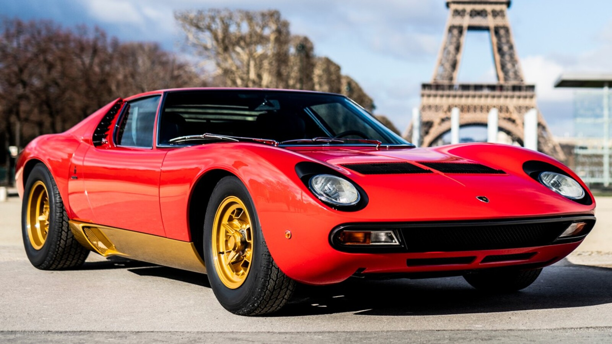

CLASICOS
Con el nuevo Polo Storico, Automobili Lamborghini desea mantener intactos su herencia y su saber hacer exclusivo.
Son numerosos los servicios que se han creado expresamente para preservar la integridad de los vehículos históricos, con un mantenimiento y una restauración orientados a ceñirse fielmente a las características originales de cada coche.
También tiene un gran valor el Archivo Histórico Lamborghini, donde se conserva toda la documentación elaborada por la Casa del Toro a lo largo de su historia.